Assistant Teaching Professor of Business Analytics
Ben Collier, PhD
I teach AI and business analytics at Carnegie Mellon's Tepper School, and help companies put them to work.
My students learn to build with AI, and to doubt it: they compare the models, question the headline number, and defend the call.


↑ k-means found these 3 groups on its own
About
From industry to the classroom, and back
Most of my teaching is at Tepper, in the MBA, the MS in Business Analytics, and the undergraduate program. I also teach at Heinz College.
Before joining Tepper I was a staff data scientist at Duolingo and Senior Director of Data Science at UPMC's Pensiamo, where I was the founding data scientist on a joint venture with IBM Watson Health. I still do that work, as Senior Director of AI and Data Science at gAIm Systems and through my consulting practice, Hot Metal AI. The problems I bring into class come from that work.
I also advise MS in Business Analytics capstone teams. Since September 2026 I have been the faculty coordinator of Tepper's MBA Business Analytics track, and starting in Spring 2027 I also advise its capstone teams.
| Carnegie Mellon University in Qatar, Assistant Teaching Professor and co-director of executive education | 2012 to 2016 |
|---|---|
| UPMC's Pensiamo, Senior Director of Data Science | 2016 to 2020 |
| Hot Metal AI, founder | 2018 to now |
| Duolingo, Staff Data Scientist | 2020 to 2023 |
| Tepper School of Business, Carnegie Mellon | 2023 to now |
| gAIm Systems, Senior Director of AI and Data Science | 2025 to now |
By the numbers
So far, in tally marks
Teaching
Courses I built
all four designed
from scratch


Artificial Intelligence for Business Leaders
Where AI creates value in a business, where it does not, and how to explain the difference to the people paying for it.
course page AI MethodsMBA · Tepper


AI Methods for Social and Visual Data
Using AI on text, networks, and images, and knowing when the output is ready for a decision.
course page Tech TalentUndergraduate · Tepper / CMU Qatar


Managing and Assessing Tech Talent and Organizations
How to hire, develop, and evaluate technical people using evidence instead of instinct.
course page Math SkillsMS in Business Analytics · Tepper


MS in Business Analytics Math Skills Workshop
The math incoming MS in Business Analytics students need before the quantitative core begins.
course pageConsulting and custom education
Work with me
I help organizations choose which AI and analytics projects to fund, check the models before they carry a real decision, and train their teams to run the work themselves. I do this through my practice, Hot Metal AI.
Reviews and builds
- AI use-case review. About two weeks. A written go or no-go on the projects you are considering, with a build plan for the ones worth doing.
- Model or metric review. About one week. I read the code, data, and evaluation, and tell you where it breaks.
- Hands-on build. Scoped with you: a prototype, a pipeline, or an evaluation harness your team can keep running.
Training built on your data
Workshops and courses for technical teams and executives, built around your own data and problems. Most of the time is spent in hands-on labs.
- One- to three-day workshops, on site or online
- Multi-week programs for technology leaders and executives
- Recorded, self-paced courses
Professional development courses for technology leaders and executives at Optum, AT&T, Cox Communications, and RapidScale.
News
Recent entries
all from this fall
Led the information session for MBA students considering the Business Analytics track. About the track
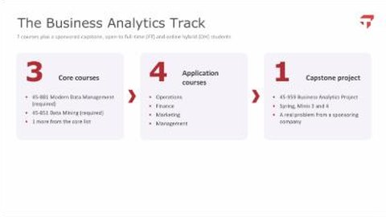
Opened the Artificial Intelligence for Business Leaders agent lab with how fast this is moving. A year earlier, superforecasters put the chance of AI solving a Millennium Prize problem by this fall at 1.7 percent, and industry experts at 4.6 percent. Two weeks before class, it happened. The forecasts
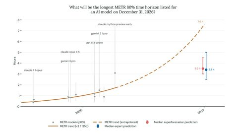
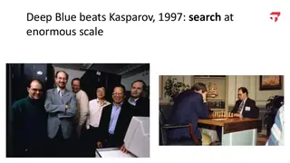
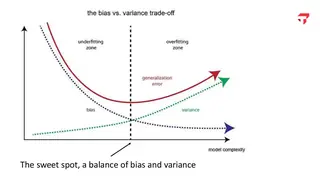
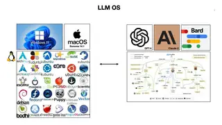
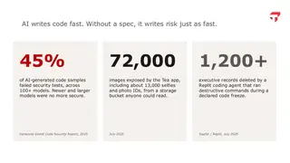
AI for LeadersSame class: Dartmouth's provost defended having used AI on his published writing since 2022, after a detector flagged it as almost entirely AI-written. We talked about where assistance ends and authorship begins. The story
Became faculty coordinator of the MBA Business Analytics track at Tepper. About the track
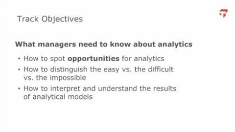
Opened Artificial Intelligence for Business Leaders with OpenAI's proof of the Navier-Stokes problem, one of the seven $1 million Millennium Prize problems, announced a few hours after our previous class. By our rough math in class, it took about $100 million of compute to win a $1 million prize. The story
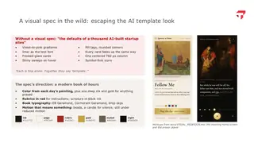
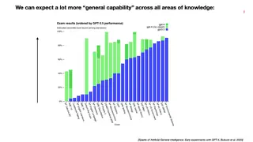
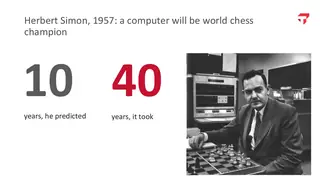
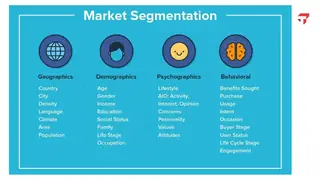
AI for Leaders
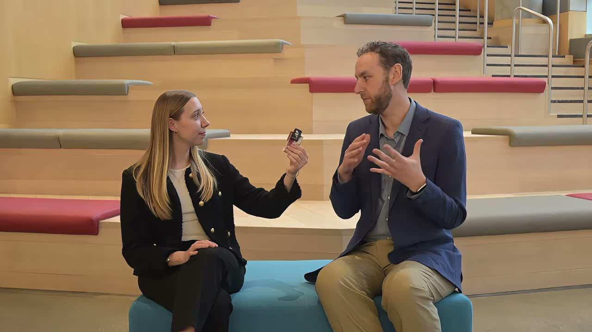
Faculty Spotlight · April 30, 2026 · 11 minTalks
Business analytics as a decathlon
A conversation for Tepper about the MS in Business Analytics curriculum, and why I describe business analytics as a decathlon.
also on the talks page
- Aug 2026 · Tepper AI-ExchangeLessons Learned from Developing New AI Courses for MBA and Undergraduate Business Students
- Jun 2025 · Kellogg, NorthwesternAI Data Visualization Coach